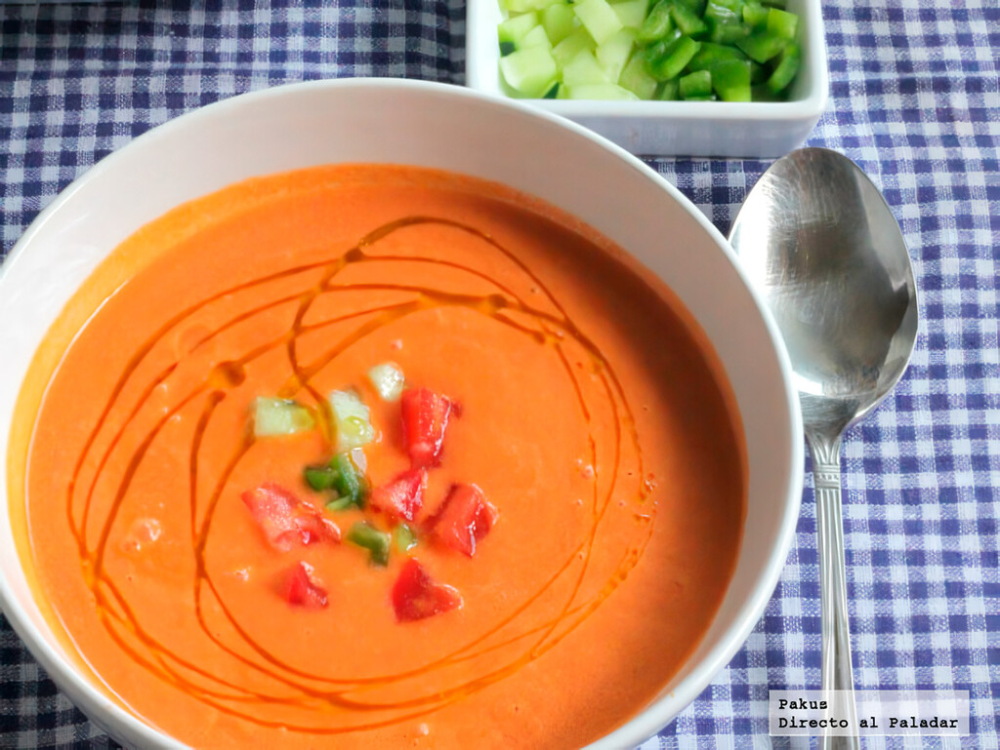

Home
Gazpacho

Description:
Gazpacho is a cold tomato soup, made entirely with a blender and
perfect for a hot summer day or night, the mix of vegetables and croutons
with the refreshing ice cubes making it a tasty way to keep the heat down.
The simplicity of this dish makes it an ideal dinner or lunch when short on time
or just looking for a quick delicious meal.
Ingredients:
- Five tomatoes
- A quarter of a cucumber
- One clove of garlic
- Half an onion
- One red bell pepper
- One green bell pepper
- Olive oil
- Apple cider vinager
- Salt, pepper and cumin
- Stale bread
- Ice cubes
- Water
Steps:
- Roughly quarter or chop all the vegetables
- Add the bread in quarters and the ice cubes
- Add the spices (salt, pepper, cumin)
- Pour in a nice amount of olive oil and vinager
- Add one glass of water
- Blend everything together
- Serve with chopped peppers and cucumber, croutons and ice as garnish